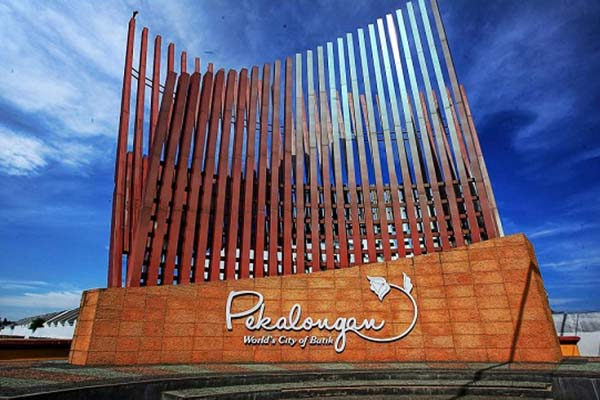

PEKALONGAN
Pekalongan adalah kota di provinsi Jawa Tengah, Indonesia. Kota ini merupakan pelabuhan terpenting di Jawa Tengah dan terkenal dengan batiknya. Pekalongan merupakan kota pertama di Indonesia dan kota Asia Tenggara pertama yang menjadi bagian dari Jaringan Kota Kreatif UNESCO.
Pekalongan berbatasan dengan Laut Jawa di Utara, Kabupaten Batang di Timur, serta Kabupaten Pekalongan di sebelah Selatan dan Barat, dan terletak di Jalur Pantura. Pekalongan berjarak 101 km sebelah barat kota Semarang, atau 384 km sebelah timur Jakarta. Pekalongan dikenal dengan julukan "Kota Batik", karena batik Pekalongan memiliki corak yang khas dan variatif. Pada tahun 2021, jumlah penduduk kota Pekalongan sebanyak 315.997 jiwa dengan kepadatan 6.983 jiwa/km².

SEJARAH
Nama Kota Pekalongan (Gemeente Pekalongan) dapat ditelusuri pada arsip dokumen Keputusan Pemerintah Hindia Belanda (Gouvernements Besluit) Nomor 40 tahun 1931. Nama Pekalongan diambil dari kosakata bahasa Jawa 'Along' (dapat banyak) dan di bawah lambang kota tertulis 'Pek-along-an'. Hal ini diikuti dengan keputusan DPRD Kota Besar Pekalongan tanggal 29 Januari 1957 dan tambahan Lembaran Daerah Swatantra Tingkat I Jawa Tengah tanggal 15 Desember 1958, serta persetujuan Pepekupeda Teritorium 4 dengan SK Nomor KTPS-PPD/00351/II/1958 yang menyatakan bahwa nama Pekalongan berasal dari kata 'Pek-Along-An' yang berarti pendapatan atau dalam bahasa Jawa Krama disebut dengan 'Pangangsalan'.
Geografi
Kota Pekalongan membentang antara 6º50’42”–6º55’44” LS dan 109º37’55”–109º42’19” BT. Berdasarkan koordinat fiktifnya, Kota Pekalongan membentang antara 510,00–518,00 km membujur dan 517,75–526,75 km melintang, dimana semuanya merupakan daerah datar, tidak ada daerah dengan kemiringan yang curam, terdiri dari tanah kering 67,48% Ha dan tanah sawah 32,53%.
Berdasarkan jenis tanahnya, di Kota Pekalongan memiliki jenis tanah yang berwarna agak kelabu dengan jenis aluvial kelabu kekuningan dan aluvial yohidromorf. Jarak terjauh dari Utara ke Selatan mencapai ± 9 km, sedangkan dari Barat ke Timur mencapai ± 7 km.
Pariwisata
Kota Pekalongan dikenal akan batiknya yang telah mendunia, banyak wisatawan yang datang atau sekedar singgah di Kota Pekalongan. Tempat wisata di Kota Pekalongan tidak hanya wisata batik saja, tetapi terdapat juga wisata keagamaan, sejarah dan alam.
Tempat Wisata
- Museum Batik Pekalongan
- Pantai Pasir Kencana
- Curug Bidadari Talun
- Pantai Wonokerto
- Sipare Green Park
- Curug Lawe Petungkriyono
- Linggo Asri
- Black Canyon Petungkriyono
- Dan masih banyak lagi